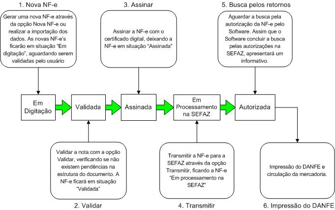
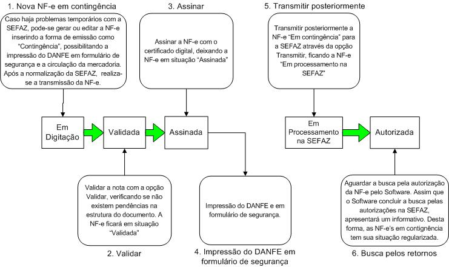

Software Emissor NF-e
Seqüência para a emissão de uma NF-e - fluxo normal
Seguindo os conceitos do Software sobre a NF-e, o usuário
deverá, para emitir uma NF-e:
- Criar uma nova NF-e ou importar uma NF-e.
- Validar a estrutura do documento
- Assinar a NF-e
- Transmitir a NF-e para a SEFAZ utilizando o certificado digital
- Aguardar o processamento da NF-e na SEFAZ. O
Software irá informar quando concluir a busca pelos
retornos da SEFAZ.
- Após a autorização da NF-e, imprimir o DANFE para permitir a circulação da mercadoria.
De forma resumida, temos:

Seqüência para a emissão de uma NF-e - contingência
Seguindo os conceitos do Software sobre a NF-e, o usuário
deverá, para emitir uma NF-e em contingência:
- Criar uma nova NF-e, editar uma NF-e ou importar uma NF-e, colocando a forma de emissão como Contingência
- Validar a estrutura do documento
- Assinar a NF-e
- Imprimir o DANFE em formulário de segurança para permitir a circulação da mercadoria.
- Posteriormente, transmitir a NF-e para a SEFAZ utilizando o certificado digital
- Aguardar o processamento da NF-e na SEFAZ. O
Software irá informar quando concluir a busca pelos
retornos da SEFAZ.
De forma resumida, temos:
